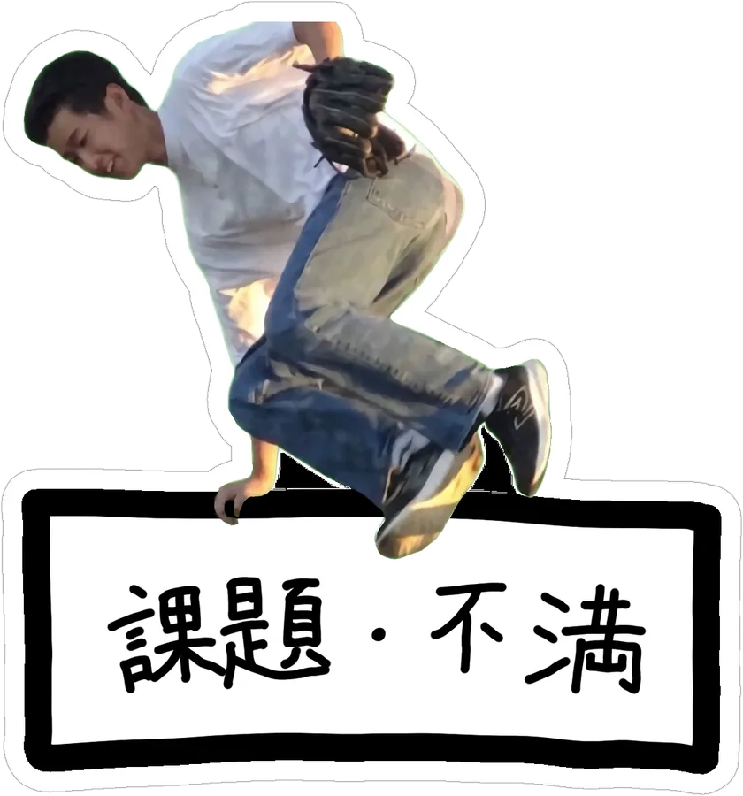
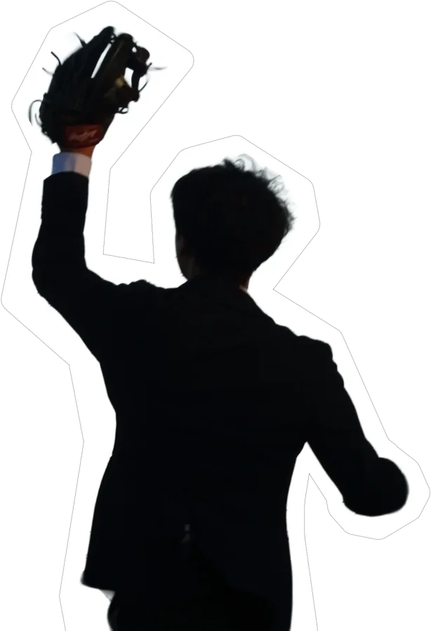
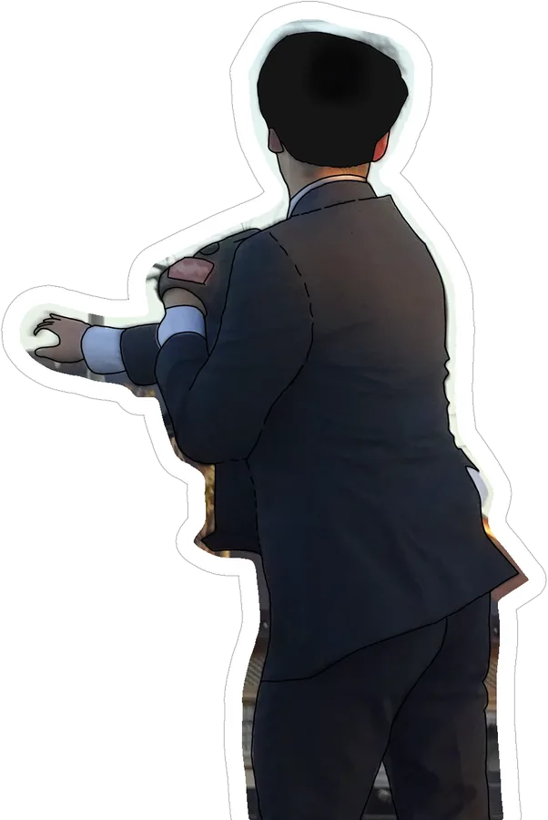

トワツの3つの活動
アプリの開発、コンテストへの挑戦、地域とのものづくり。この3つを軸に活動しています。
-
学びのアプリの開発
AIの生徒「なじみ」に教えて学ぶ学習アプリ NajoshiteAI を、企画から開発まで自分たちで手がけています。2027年春のリリースを予定しています。
NajoshiteAI -
AI開発とコンテストへの挑戦
第6回 AI甲子園「JOYFUL」で、公共交通機関での忘れ物を検知する AI「WasuFinder」を開発するなど、つくったものでコンテストに挑戦しています。
WasuFinder -
地域とのものづくり
令和7年度 なとりこどもファンドに採択された「ミルクラフト」など、名取の地域とともに活動しています。
ミルクラフト




大事な三本柱
トワツが大事にしている、三つのことです。
-
自分が、
最初のユーザー。不満と「面白そう！」から、すべてが始まる。
-
全員が、
エンジニア。高専で学んだ技術で、思いついたら形にする。
-
エンジニア
万歳な社会へ。つくる人が、いちばん楽しい世界を。
トワツ作品展示会
制作中のものから、これまでにつくったものまで。
4コアCPU
代表・会計・デザイン・戦略の4人です。写真を選ぶと、それぞれの紹介ページへ移ります。
トワツアップデートログ
お知らせと、受賞・出場などの実績です。
日常リリースノート
つくりながら考えたことや、開発の様子を書いています。
トワツとは？
- 名称
- トワツ
- 形態
- 仙台高専の学生団体
- 所在地
- 宮城県名取市
- 代表
- 上原 貫太
- 活動内容
- アプリの企画・開発